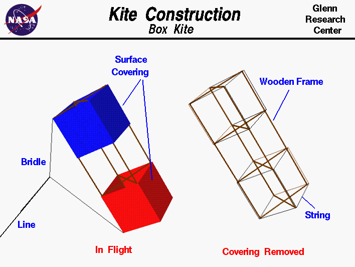

|

An excellent way for students to gain a feel for
aerodynamic forces
is to fly a kite.
Kite
flying
is fun when done
safely
and you can learn many of the fundamentals of
airplane
aerodynamics because a kite is very much like an airplane.
In fact, the Wright brothers used
kites and
gliders
to learn the
fundamentals before their first successful
airplane
flight.
Like an airplane, a kite is a heavier than air craft. Kites depend
on surfaces to generate the aerodynamic
forces
necessary for flight and use rigid structures to support the surfaces and
transmit the forces. Differen
kites.
have different types of surfaces
and structures; on this slide we show a simple box kite. The left side
of the figure shows the kite as it would appear in flight and the right
side shows the inner structure.
Kite flying is a delicate balance between aerodynamic forces, the
weight
of the parts of the kite, and the distribution of these forces.
In flight, the kite is connected to the
flyer by the
control line
and the flyer can feel the tension in the line
created by the aerodynamic forces on the kite. The line is connected to
the kite by a string
bridle.
The place where the bridle connects to
the line is called the
bridle point
and the kite pivots about this
point in flight. The bridle point can be adjusted to
change the flight
characteristics of the kite.
The surfaces of the kite are covered by a thin covering of paper,
plastic, or cloth, which deflects the wind downward and creates the
aerodynamic forces of
lift and
drag on the kite.
If we remove the covering, we can see the structure which transmits the
aerodynamic forces to the bridle. A box kite structure is made from
several sticks and some string. The sticks can be made of a light
but strong piece of wood such as balsa or bamboo, or a light but strong
plastic tube. In the box kite, there are four main "leg" pieces of equal
length and four "cross" pieces which are made from two sticks.
The structure is held together with strings wrapped around the legs at the location
of the cross members. The surface covering is attached to the strings.
Notice that the structure is small, light and strong. It must be made
strong to withstand the forces of the wind and weight, but it must
also be light to keep the weight low.
To save weight, only two "cross" pieces are used on some box kites.
The trade of strength
and weight must be considered in every flying thing from a kite to
a large airliner.
Compare the structure and coverings of this box kite with the Wright
brother's
1900 aircraft and
note how similar they are.
Activities:
Guided Tours
-
 KiteModeler
KiteModeler

-
Forces on a Kite:
Navigation ..


- Beginner's Guide Home Page
|